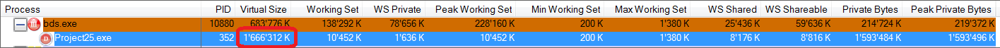
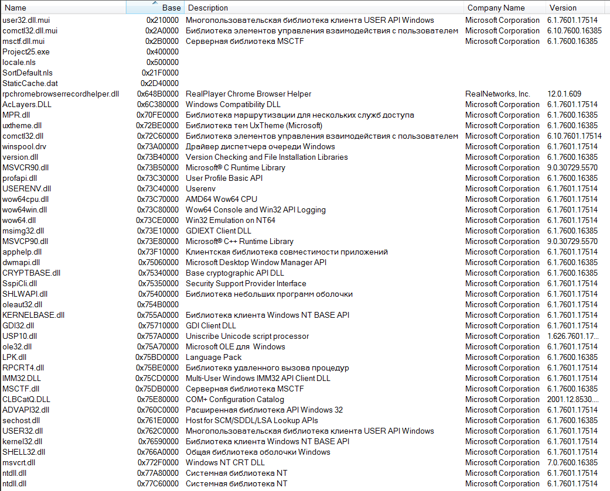
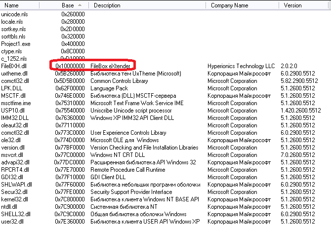

Миф №3: 32-х разрядное приложение не может выделить 1.5 Гб памяти за раз
Несмотря на то, что приложению доступно по умолчанию около 2 Гб виртуального адресного пространства, утверждается, что приложение не может выделить 1.5 Гб памяти одним куском.
Давайте проверим. Изменим код с AllocMem в нашем тестовом приложении на выделение 1.5 Гб и запустим программу. Получаем:

Легенда разрушена?
Не так быстро. Попробуем сделать это на другой машине:
(сообщения "Мало виртуальной памяти" нет)
Гм, в этот раз нам не удаётся выделить 1.5 Гб памяти.
Мы получили противоречивые результаты. В чём же дело?
Хотя нам действительно доступно около 2 Гб одним куском (только в самом начале и в самом конце этого региона откушено по 64 Кб на спец. области), но нужно вспомнить, что в этом адресном пространстве лежат не только ваши данные, но и ваш код, библиотеки (DLL), их код и так далее. Даже если вы не загружали библиотек явно в вашем коде - они всё равно будут загружены. Как минимум это kernel32.dll и user32.dll. И дальше всё зависит от того, как именно они загружены. Обычно системные библиотеки загружаются одним большим компактным регионом, расположенном по старшим адресам - поскольку они загружаются с краю адресного пространства, то в центре у вас получается большой кусок для вашей работы. Но если какая-то DLL загружается в середину адресного пространства, то оно оказывается разбито пополам, и вы уже не сможете выделить память одним куском (но всё ещё можете выделить её в два или три куска).
К примеру, вот снимок загруженных DLL в адресном пространстве первого примера (который успешно выделил 1.5 Гб памяти) до выделения памяти:

Как видим, в центре у нас есть большой свободный кусок - от $2D40000 до $648B0000, т.е. $648B0000 - $2D40000 = 1'563 Мб (примечание: это не значит, что в этом промежутке нет вообще ничего - там могут быть не DLL, а данные). Т.е. у нас есть свободное место.
А вот этот же снимок DLL на машине, где выделить память не удалось:

Как видите, в этом случае в середине большого свободного промежутка у нас разместилась DLL от FileBox Extender - это небольшая утилита, которая добавляет полезные кнопки в заголовки окон. Поскольку она меняет поведение каждого окна, то она должна быть загружена в каждую программу. Но из-за того, что она оказалась неграмотно спроектированной, её базовый адрес оказался в неудачном месте. Такая ситуация называется фрагментацией адресного пространства.
Мораль истории: либо ставьте поменьше "расширителей оболочки", либо следите, чтобы они были грамотно спроектированы.
Статус мифа: plausible.